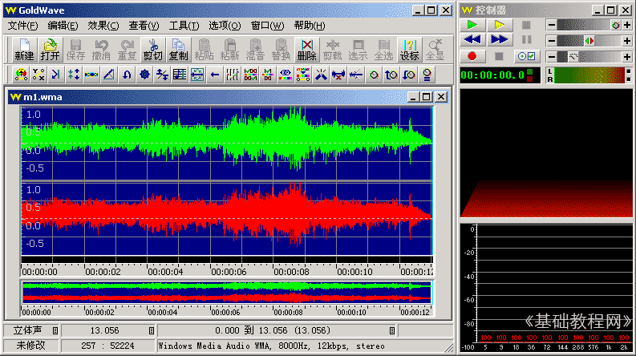
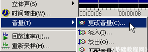
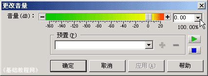
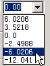
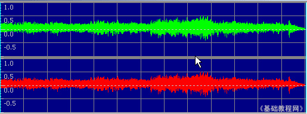

Goldwave 基础入门教程
二、音量调节 返回
有时候音乐的音量太高或太低，需要适当调整下，在Goldwave中有一个效果菜单中可以修改，下面我们来看一个练习；
1、启动Goldwave
1）点击桌面上的Goldwave图标，或者在安装文件夹中双击Goldwave图标，就可以运行Goldwave；
2）第一次启动时会出现一个提示，这儿点“是”即可，自动生成一个当前用户的预置文件；
3）顺利进入后出现一个灰色空白窗口，旁边是一个暗红色的控制器窗口，它是用来控制播放的；
2、调整音量
1）点击工具栏上的第二个按钮“打开”按钮 ，在出来的打开对话框中选择一首音乐文件，打开它；
，在出来的打开对话框中选择一首音乐文件，打开它；
本课images文件夹中有一首 m1 文件，可以用作练习；

2）点菜单“效果－音量－更改音量”命令，出来一个对话框：

在出来的对话框中，在右上角的下拉按钮上点一下，选择 -6.0206 负数是降低音量，也可以自己输入；
 
点下边的绿色播放按钮，试听一下效果，然后点“确定”，回到窗口中，可以发现波形变小了；

3）点“文件－另存为”，以 m1a 为文件名，保存文件到自己的文件夹，
除了可以调整音量外，还可以选中开头部分，设置淡入，把结尾部分设为淡出；
本节学习了调整音量的基本方法，如果你成功地理解并完成了练习，请继续学习下一课内容；
本教程由86团学校TeliuTe制作|著作权所有
基础教程网：http://teliute.org/
美丽的校园……
转载和引用本站内容，请保留版权信息和本站链接。